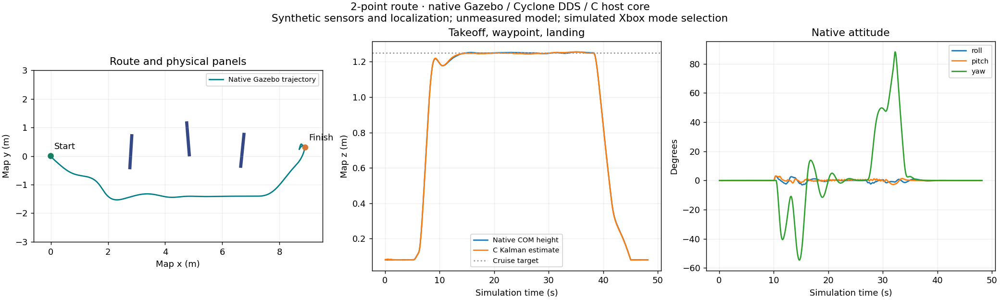
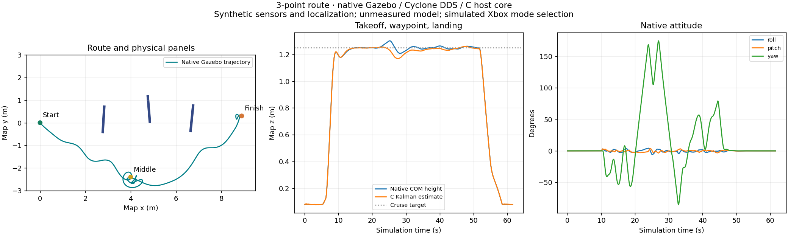

Launch/control/UART guide · Live cameras · PC route map
Native Gazebo 10.5/OGRE2, active ESP32 C host DLL and independent ROS2 processes using Cyclone DDS. These route regressions use simulated Xbox gestures; they are separate from the real Xbox startup checks. Real Xbox connection/reports and YOLO processing were verified in live startup sessions, not claimed as a completed human flight. QEMU separately passed 44 checks. Physical motor outputs remain disabled.
Assumed model: 1.2 kg, inertia (0.012,0.012,0.022) kg·m², 450 mm diagonal, 6 N/motor, 40 ms lag; synthetic calibration, sensor noise and map localization. Known-size blue-panel ranging only, not arbitrary obstacle depth or measured hardware precision.
Results and hashes of original evidence · Initial live Xbox startup · Corrected standalone launch and custom spawn · Live ROS2 startup · Original 44-check QEMU UART
The initial standalone startup succeeded internally but its launcher incorrectly reported normal shutdown as failure; its logs/video are preserved. A later launch verified the correction.
Landing error 2.78 cm · panel contact steps 0 · 48.2 simulated seconds

Waypoint checks · Original CSV · Original ROS2 log · Original Gazebo log · PC request and response · Model assumptions/source hashes
Landing error 1.16 cm · panel contact steps 0 · 61.6 simulated seconds

Waypoint checks · Original CSV · Original ROS2 log · Original Gazebo log · PC request and response · Model assumptions/source hashes